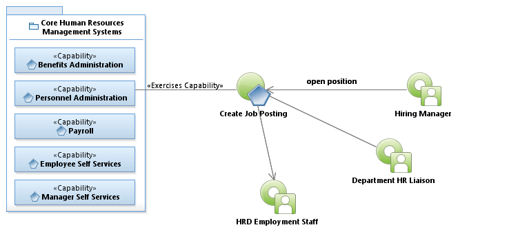
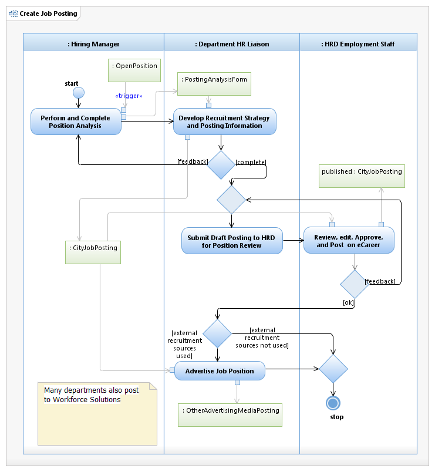

Use Case Model: Create Job Posting
Architect: Aaron Brown, IT Enterprise Architect Senior
Date Last Modified: 2/13/2013
User Review: Sonya Alexander-Harry, Roberta Byram
Date: 02/13/2013
When the Hiring Manager identifies an open position, the Hiring Manager sends a hiring need to the Hiring Facilitator. The Hiring Facilitator coordinates with the Hiring Manager to develop a hiring strategy and relevant posting information. The hiring strategy may include the need to create a non-city job posting such as in professional journals, non-city job advertising Web sites, and/or various magazines. The non-city posting can vary from a simple paragraph possibly including a link to the city posting or an elaborate job description eliciting new potentials to join the city team. The final city posting is quality checked by the Quality Assurance Representative and published to the city job posting Web site.
Follow link to Role Definitions

Use Case Model: Create Job Posting

Activity Model: Create Job Posting
Activity Documentation
| Activity | Documentation |
|---|---|
| Perform and Complete Position Analysis | Working closely with department Administrator, identifies open positions, competences required, determines parameters for the posting, determines posting period, and posting location (internal/external/Web site). Identifies business need. Determines job title is appropriate for need. Determine preferred qualifications, competences, licenses, language, etc. The Hiring Manager identifies a position as a result of a position reclassification, vacancy, or new position need and sends the Job posting analysis form need to the Hiring Facilitator. Additionally, Commercial Driver license (CDL), Alcohol and Drug testing, and skill based assessments requirements are determined. |
| Develop Hiring Strategy and Posting Information | The Hiring Facilitator coordinates with the Hiring Manager to develop a hiring strategy and posting information. The strategy might include the need to create a non-city job posting in professional journals, non-city job advertising Web sites, and/or various magazines. They review the job description and job classification, and determine if it's accurate for the job. Elements of the hiring strategy are: Job grant funded, requires CBI, how long the posting will be posted, if there are preferred qualifications, and whether it's internal or external posting. |
| Advertise Job Position | Advertise on non-city resources like websites, magazines, journals, newspapers, associations, direct mail, etc depending upon the position and need and budget. |
Note: When the activity is self explanatory no documentation is provided.